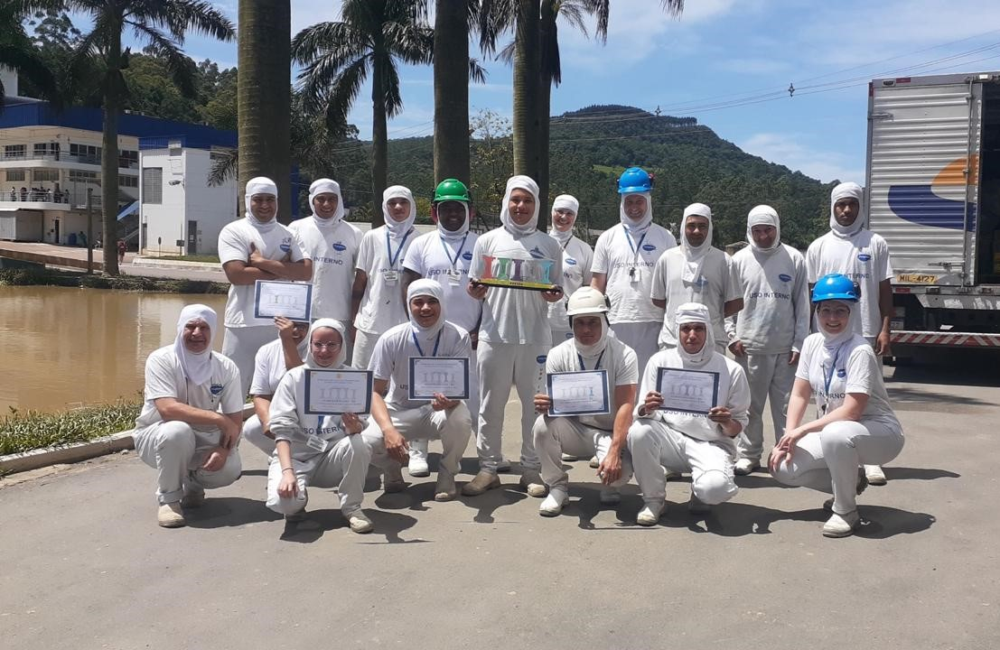
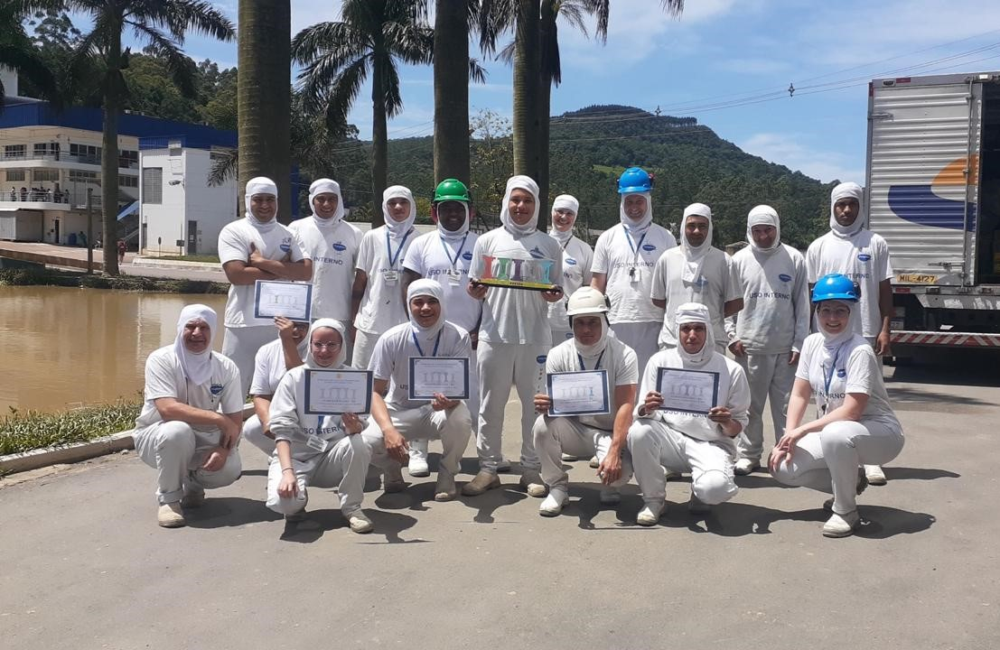

Início
De onde Veio
Uma cidade no interior de Santa Catarina, chamada Rio do Campo.

Trajetória
Aos 18 anos, comecei a trabalhar em uma empresa na cidade de Rio do Sul, Pamplona Alimentos, que passou a ser minha segunda casa. Iniciei como auxiliar de produção na área de industrializados. Com o passar do tempo, fui me destacando e assumindo tarefas mais administrativas. Em 2015, passei a trabalhar no setor de PCP (Planejamento e Controle de Produção). Nessa função, eu lidava com rendimentos de cortes, alterações de cadastros de insumos e também com a programação de compras de insumos para a produção. Foi uma grande paixão. Como ainda não havia muitas ferramentas implantadas para esse controle, criei algumas planilhas em Excel para ajudar no trabalho, que são usadas até hoje pelos atuais colaboradores. Foi uma época de muito aprendizado e desenvolvimento.
Em 2019, fui convidada a ocupar uma vaga de programadora de produção de industrializados, um novo desafio. Foi uma experiência ótima, conheci mais a fundo o processo produtivo e aprendi a lidar com pressões de várias áreas.
No final de 2019, eu tinha um objetivo pessoal, queria trabalhar em um projeto voluntário de forma integral. Então, decidi me dedicar totalmente a esse trabalho, o que me ajudou a ver a vida de forma mais equilibrada. No final de 2021, fui convidada a retornar à empresa Pamplona para assumir novamente a vaga de programadora de compras. Aceitei. Foi ótimo voltar e ver como o que eu tinha desenvolvido ainda estava em uso. Trabalhei um ano nessa vaga e fui chamada para ser a líder do setor. Outra experiência espetacular, na qual pude conhecer melhor meus colegas e liderados, ajudando-os a se desenvolver profissionalmente. Ganhamos um troféu em uma etapa de um torneio de gestão realizado na empresa. Foi incrível.
Nesse período, em meados de 2022, conheci uma pessoa muito especial que hoje é meu esposo. No entanto, ele morava em outro estado, o que afetaria meu trabalho atual. Decidimos que eu me mudaria após o casamento para morar com ele do outro lado do país.


 

Onde foi Parar
Em Janeiro de 2024 eu sai então da empresa para me organizar para o meu casamento e minha mudança.
Eu e o Alisson nos casamos em 23/02/2024 e logo após me mudei para Fortaleza no Ceará, Saí do interior de Santa Catarina para a capital do Ceará.
uma grande mudança em minha vida em todos os sentidos. Mas com certeza uma mudança para melhor. Estou muito feliz em estar aqui do lado do meu amor.
Nesse momento também comecei uma migração de carreira.

O que está Fazendo
em Março de 2024 Comecei meus estudos na PUC Minas Virtual, graduação de Tecnólogo em sistemas para internet.